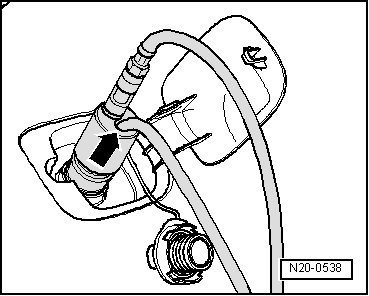
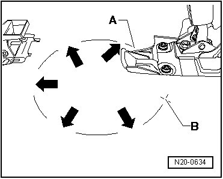
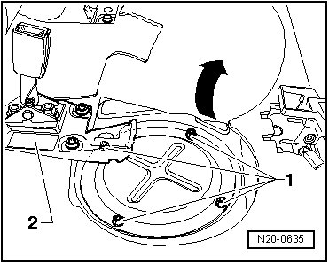
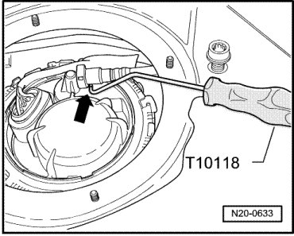
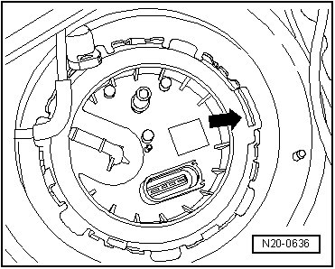

Procedures
Fuel Tank, Draining
Special tools, testers and auxiliary items required
• Fuel extracting device (VAS 5190)
• Wrench (T10202)
• Assembly tool (T10118)
Procedure
CAUTION!
Fuel supply lines are under pressure! Wear protective goggles and protective gloves to avoid damage and contact with skin. Before removing from hose connection wrap a cloth around the connection. Then release pressure by carefully pulling hose off connection.
- Read safety precautions before beginning work --> [ Safety Precautions ] Safety Precautions.
- Open the fuel tank flap.
- Insert the suction hose - arrow - on the fuel extracting device (VAS 5190) about 170 to 180 cm into the fuel filler neck and extract the fuel.

• When no more fuel can be extracted the tank is emptied only enough for the sender flange to be opened without danger. The tank may be removed while containing the remaining fuel.
• If work must be performed on the fuel pumps or fuel tank sensors, proceed as follows:
- Cut open carpet from point - A - to point - B - in pre-cut area - arrows -.

- Remove nuts - 1 - from cover. If necessary, unbolt backrest support - 2 - or support mounting. --> Body Interior 72 Removal and Installation

CAUTION!
Fuel supply lines are under pressure! Wear protective goggles and protective gloves to avoid damage and contact with skin. Before removing from hose connection wrap a cloth around the connection. Then release pressure by carefully pulling hose off connection.
- Hold a cloth on connections for fuel supply line and auxiliary heater and pull off hose couplings.
• Release connection by pressing button on hose coupling.
- Pull off connectors for fuel pump and fuel gauge sender.
- Remove locking ring from sensor flange using wrench (T10202).

- Carefully pry out sender flange and raise it slightly.
- Insert the suction hose on the fuel extracting device (VAS 5190) as far as possible in the right and left sides of the fuel tank and extract the fuel.
- For work on left side of fuel tank, proceed as described above.
- When breather line is pulled off, hose coupling button often cannot be pressed in. In that case, use assembly tool (T10118) - arrow -.

For additional work on components inside of fuel tank, sensor flanges may remain removed.
If fuel tank only needed to be emptied, install sensor flange again.
- First check that sender flange seals are properly seated.
• The sealing rings should be replaced.
- Insert sender flange with locating tab in direction of travel - arrow -.

- Tighten left and right locking rings using fuel gauge sender Wrench (T10202) to 110 Nm.